Safari
Safari 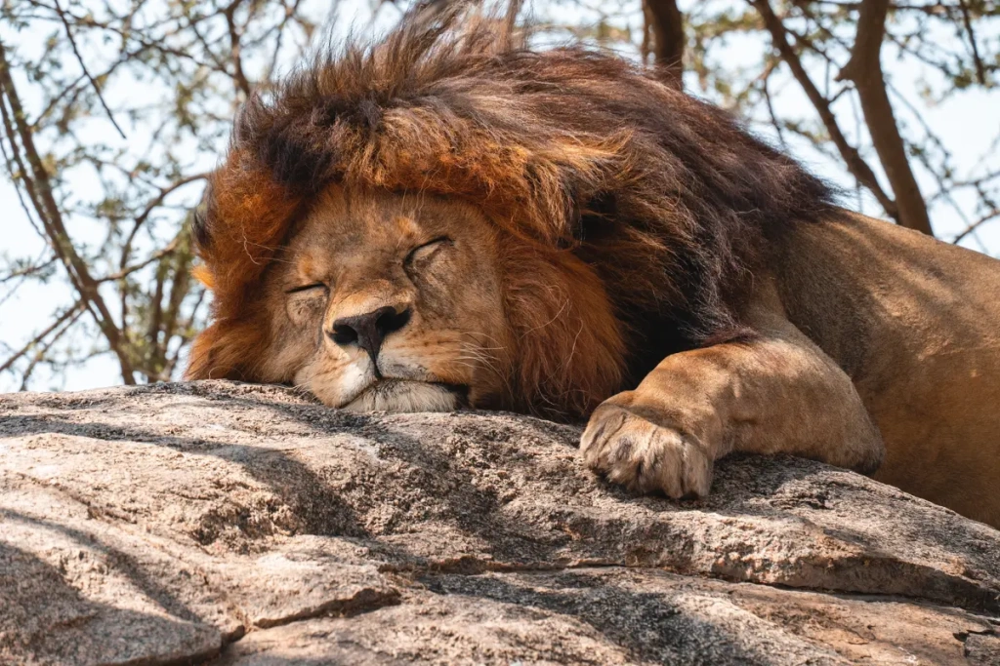
From African elephants and Maasai giraffes to snow leopards, red pandas, leopards, colobus monkeys, and grey crowned cranes, the Angelino Adventures team highlights some of the planet’s most stunning animals. Many of them can be spotted on a safari in Tanzania’s national parks and in other parts of the world.
Giraffe
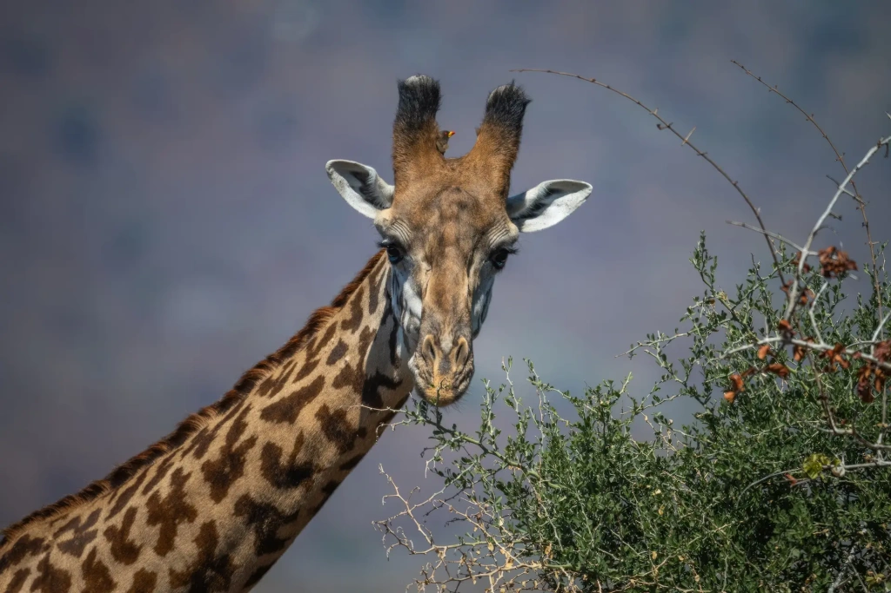
The Maasai giraffe is the largest of all giraffe subspecies, with males reaching up to 5.5 meters (18 feet) tall and weighing more than 1.3 tons (2,860 pounds). They are recognizable by a small hump on their back and a coat pattern that resembles oak leaves with jagged edges. Each pattern is unique, much like a human fingerprint. Scientists have found that a Maasai giraffe’s coloration is inherited from its mother, and the shape of the spots can influence calf survival. Young giraffes with large, irregular spots are more likely to reach adulthood.
A giraffe’s neck contains only seven vertebrae, yet each is about the size of a human head. Its massive heart, weighing up to 11 kilograms (24 pounds), pumps blood at high pressure to reach the brain several meters above the ground.
Another fascinating feature is the giraffe’s dark blue tongue, which can reach up to half a meter (1.6 feet) long. It easily grasps leaves, even from thorny acacia trees, and the melanin in the tongue protects its delicate mucous membrane from the sun. This adaptation is essential, as giraffes spend 10–12 hours a day under direct sunlight, plucking leaves from trees. According to the African Wildlife Foundation, a single giraffe can eat up to 30 kilograms (66 pounds) of greenery each day, making this protection vital.
When needed, a giraffe can sprint up to 56 kilometers per hour (35 miles per hour), and a kick from its hoof can kill even a lion. Yet the greatest threat to the Maasai giraffe is humans. Over the past 30 years, habitat loss, poaching, and expanding agricultural land have cut their population from 70,000 to just 35,000 individuals.
Zebra

In the wild, there are three species of zebras: the plains zebra, the mountain zebra, and the rare Grevy’s zebra. The plains zebra is the most common, but it is already classified as “near threatened.”
Plains zebras can reach speeds of up to 65 kilometers per hour (40 miles per hour). Their main survival strategy, however, is agility: they often run in a zigzag pattern, making it harder for predators to catch them, as their movements are unpredictable and confusing.
The zebra’s most distinctive feature is, of course, its stripes, with each individual having a unique pattern. For years, scientists debated their purpose. A study published in Nature Communications in 2014 provided a clear answer: the stripes mainly protect zebras from bloodsucking flies and other parasites. Other theories, including camouflage, thermoregulation, social signaling, or predator defense, did not receive strong evidence. The study confirmed that stripes significantly reduce insect bites and the risk of disease.
“We’ve finally gotten to the stage where we can stop asking the question ‘Why stripes?’ and start asking ‘What prevents flies from landing on stripes?’ ” — The New Yorker cites Tim Caro, a biologist at the University of California, Davis, and the lead author of the study.
An interesting feature of zebras is that they communicate not only through a variety of sounds but also with ear and body movements. Using this “gesture language,” they can signal threats, aggression, or friendliness.
Zebras are also remarkably resilient. Each year, they travel hundreds of kilometers in search of water and grazing land. The plains zebra holds the record for the longest terrestrial migration among African mammals, covering over 500 kilometers (310 miles) across Namibia and Botswana.
Lion
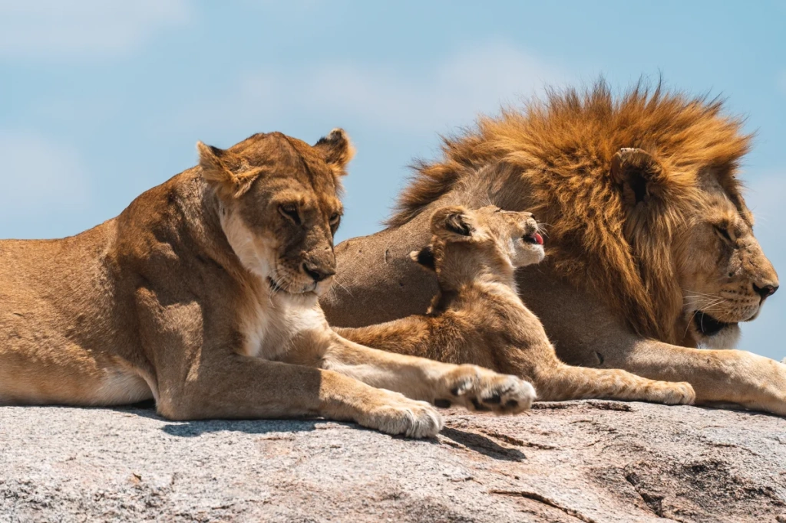
Lions are a rare exception among felines, thanks to their social structure. They live in prides of 10 to 20 members. Females do most of the hunting in coordinated groups, while males focus on defending the territory.
A male lion’s mane is particularly striking: the darker and fuller it is, the more attractive he appears to females and the more intimidating to rivals. Manes can reach up to 16 centimeters (6.3 inches) in length and are closely linked to testosterone levels. Castrated lions in captivity usually lack manes.
Roaring is another hallmark of lions. Their roars can be heard up to eight kilometers (5 miles) away, thanks to a uniquely structured larynx that produces powerful, low-frequency sounds.
Lions spend up to 20 hours a day resting, conserving energy for hunting, which they usually do at night or during twilight.
Leopard
The African leopard thrives in a wide range of habitats, from dense forests and savannahs to mountainous, semi-desert areas, and even the outskirts of cities. Although smaller than lions and tigers, leopards are among the strongest and most resilient predators in the wild. Their coat provides perfect camouflage in the dappled light of forests or among the tall grasses of the savannah, and, like giraffes and zebras, each individual has a unique pattern.
A leopard’s coat also adapts to its environment. In dense, shady forests, they tend to be darker, blending seamlessly into the undergrowth, while in dry, open landscapes, their coat takes on lighter, sandy tones that match the sun-scorched earth.
Leopards lead solitary, nocturnal lives, defending large territories. Their hunting is aided by exceptional vision and hearing. A 2024 study revealed that each leopard has a unique vocal biometric signature, allowing researchers to identify individuals by their calls with up to 93% accuracy.
According to the San Diego Zoo, leopards can leap up to six meters (20 feet) forward and about three meters (10 feet) upward, and they are skilled climbers. Their diet is highly varied, ranging from birds and rodents to antelopes and even the young of larger animals such as giraffes.
Despite its remarkable adaptability, the African leopard is listed by the IUCN as a species at risk of extinction. Populations continue to decline due to habitat loss and conflicts with humans.
Grey Crowned Crane

The grey crowned crane stands about one meter (3.3 feet) tall and is easily recognized by its golden crown of feathers, grayish body, white cheeks, and red throat sacs. It is one of 15 species found mainly in Eastern and Southern Africa, including Uganda, Kenya, and Tanzania.
Unlike most cranes, which build their nests on the ground or in shallow water, the grey and black crowned cranes are the only members of their family that can nest in trees. This ability comes from an elongated hind toe, which lets them grip branches securely. Scientists believe this unique adaptation is a remnant of ancestral traits lost in other members of the crane family.
“The most ancient of the cranes, crowned cranes pre-date the other extant crane species by tens of millions of years. Their coiled trachea producing a honking call and their long hind toe or hallux, providing crowned cranes with the ability to grasp onto structures for roosting or perching, are unique characteristics in this crane subfamily,” the International Single Species Action Plan for the Conservation of the Grey Crowned Crane states.
According to National Geographic, grey crowned cranes are monogamous, with pairs staying together for life. Their courtship dances, featuring bows, jumps, and calls, form the centerpiece of their mating rituals.
In recent decades, their population has declined sharply, and the species is now considered endangered. Major threats include wetland drainage, land cultivation, agrochemical pollution, capture and trade, and collisions with power lines.
East African oryx
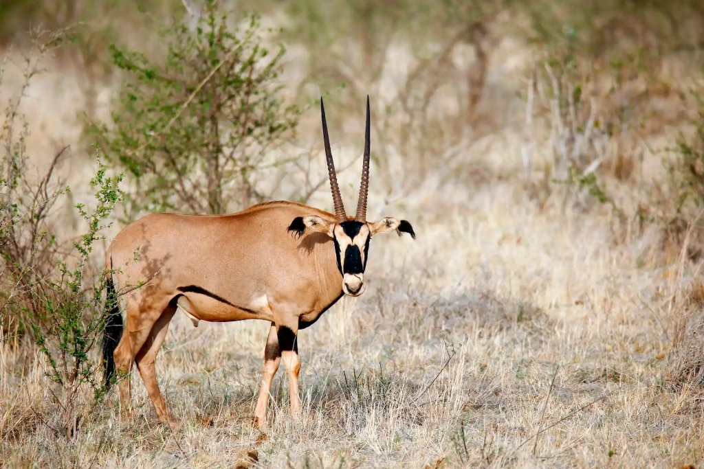
The East African oryx, also called the Beisa oryx, is an elegant antelope just over one meter (3.3 feet) tall, found in the arid regions of East Africa. Its smooth gray coat is separated from the white belly by a distinct black stripe, a signature feature of the species. Black markings also appear on the head and neck, forming a unique pattern that runs across the forehead, along the nose, and connects the eyes to the mouth. Completing its striking appearance are a small chestnut mane and slender, straight, ringed horns.
Beisa oryx live in Ethiopia, northern and eastern Kenya, parts of Tanzania, and South Sudan. They are perfectly adapted to life in harsh semi-deserts and dry savannahs, where temperatures vary widely and water is scarce.
“The Beisa oryx has a highly efficient water metabolism. [They] can tolerate high body temperatures and conserve water by reducing sweating, which helps them survive in extreme heat,” states the official website of Samburu National Reserve in Kenya.
The East African oryx is a social animal, often forming groups that collectively defend against predators. Its horns, which can reach up to 85 centimeters (33 inches) long, serve both as a means of defense and to establish social hierarchy.
Today, the species is classified as endangered, with an estimated 11,000 to 13,000 mature individuals remaining.
Serval
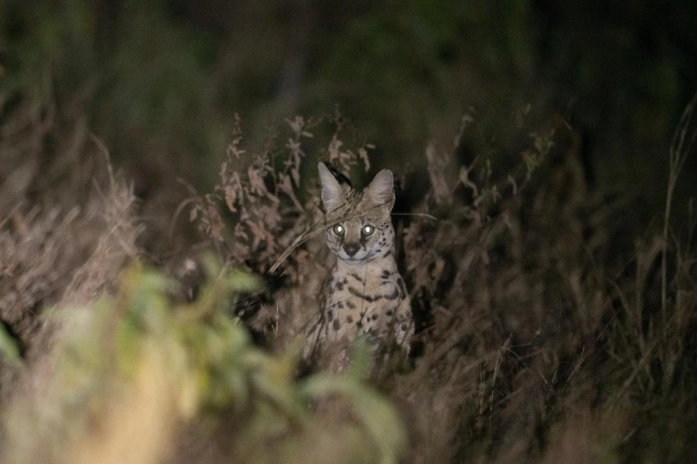
The serval, called Tierboskat in Afrikaans (meaning ‘forest tiger cat’), is a medium-sized wild cat with a slender but powerful build. Its long legs and relatively short tail set it apart from many other members of the cat family.
Servals typically have a reddish-brown coat marked with prominent black spots. Two or four stripes run from the crown of the head along the neck and back, gradually blending into the spotted pattern.
These cats mainly inhabit the African savannah and are exceptionally agile hunters. They can leap vertically up to 2.7 meters (8.9 feet) and jump horizontally up to 3.8 meters (12.5 feet) from a standstill, allowing them to stun prey with a single strike.
Lesser Flamingo

The lesser flamingo is the smallest member of its family, rarely exceeding 125 centimeters (4.1 feet) in height. These birds are easily recognized by their long, slender legs and gracefully curved S-shaped neck. The latter results from resting with their head tucked against their back, shifting their center of gravity and maintaining balance.
Flamingos can also stand on one leg with little effort, thanks to the unique anatomy of their joints. Studies show that in this position, they lock the muscles in their legs, reducing strain and conserving energy.
The plumage of lesser flamingos ranges from pale pink to deep red, with the intensity of their color directly linked to their diet. Carotenoid pigments, obtained from algae and crustaceans, give their feathers their pink-red hue. The richer their diet is in these pigments, the brighter their feathers become.
Lesser flamingos primarily inhabit areas around alkaline or saline lakes. One of the most famous sites is Lake Natron in Tanzania, where they form massive colonies numbering in the hundreds of thousands. During the breeding season, they perform synchronized ritual dances that strengthen social bonds and stimulate mating.
Galago
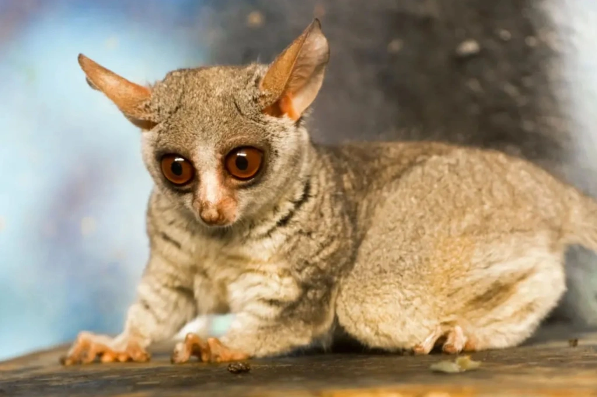
The galago, also known as the bushbaby, is one of Africa’s most charming primates, found in regions south of the Sahara. These small, arboreal animals weigh up to 200 grams (0.44 pounds) and are easily recognized by their large, expressive eyes and ears, soft, fluffy fur, and long tails that help them balance among the tree canopies.
Galagos have long hind legs and well-developed upper limbs, giving them remarkable jumping ability. According to Royal Society Publishing, Senegalese galagos can leap very high thanks to a special mechanism in their thigh muscles and tendons. They first stretch their muscles, storing energy, then release it suddenly like a spring, allowing them to jump up to two meters (6.6 feet) from a standing position.
Until 1980, scientists recognized only six species of galagos. Later studies, including analyses of their vocalizations, revealed at least 20 subspecies.
Galagos are nocturnal and feed on fruits, insects, and small birds, but their diet primarily consists of . They use specially adapted, slightly forward-tilted lower incisors and canines to gnaw holes in the bark and scrape out the sap.
Duiker
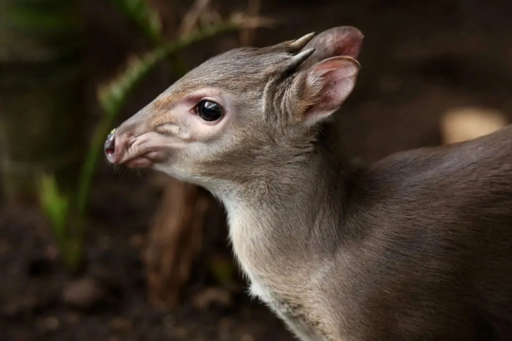
Duikers are small antelopes that primarily inhabit tropical forests and shrubs across Central, West, and East Africa. There are about 20 recognized subspecies. Most duikers are modest in size, standing 40 to 70 centimeters (16–28 inches) tall and weighing 10–25 kilograms (22–55 pounds). Despite their small stature, they are remarkably resilient and move swiftly through dense vegetation.
Duikers are also notable for their secretive lifestyle. They are usually most active at night or during twilight, making them difficult to spot on safari. Their diet is varied, including leaves, fruits, seeds, and occasionally insects.
Duikers lead largely solitary lives and communicate with subtle vocal signals. For instance, female blue duikers use soft moans to communicate with their young, while males may emit whistles or sneeze-like sounds to signal danger.
Another distinctive feature is their coat patterns, which help them blend into the forest. Some species, like the red duiker, have rich reddish fur, while the rare Tanzanian Abbott’s duiker sports a reddish-brown coat. This subspecies is among the largest, with adults weighing up to 60 kilograms (132 pounds). They can be found at night in the Udzungwa Mountains, the western Usambara Mountains, Mount Kilimanjaro, and a few other locations. However, because of their secretive nature, duikers remain one of the least-studied groups of antelopes.
Colobus Monkey
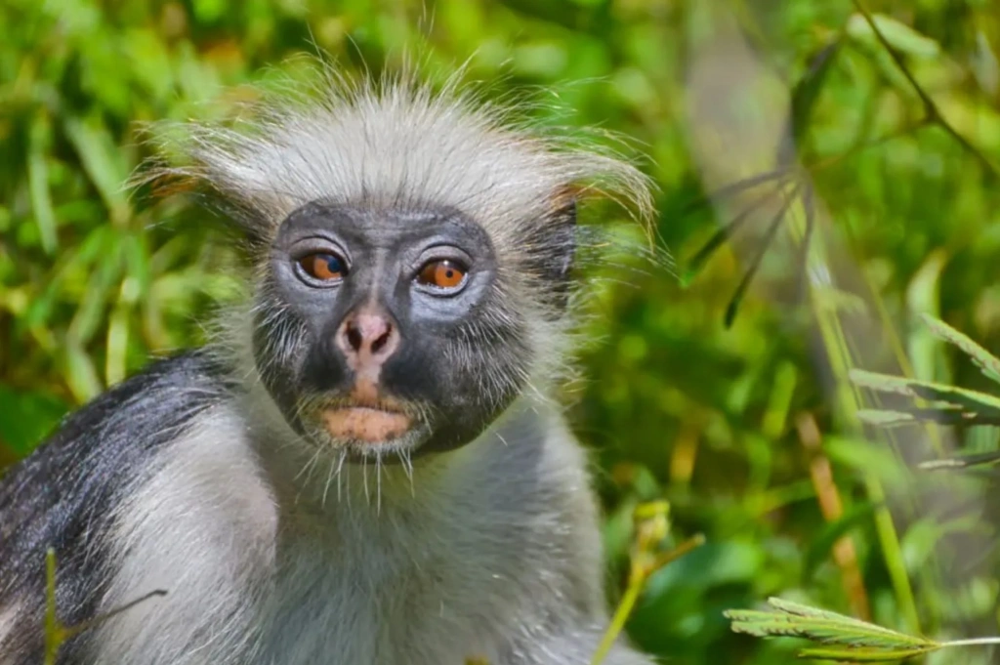
Colobus monkeys inhabit forests across Eastern and Western Africa and are easily recognized by their striking black-and-white or black-and-gray coloration. Their long tails help them move skillfully through the tree canopy, using branches like trampolines to leap up to 15 meters (49 feet). During these jumps, they extend both their front and hind limbs, and their long fur, according to the African Wildlife Foundation, likely acts like a parachute, stabilizing their bodies in midair.
Colobus monkeys lack a fully developed thumb, having only a small stub in its place. This unique feature sets them apart from all other primates and gives them their name: “colobus” comes from the Greek κολοβός, meaning “mutilated” or “stunted.”
Primarily herbivorous, colobus monkeys feed mainly on leaves, including some that are toxic or difficult for many animals to digest. Their complex, multi-chambered stomachs efficiently ferment and break down fiber while neutralizing toxins, reducing competition for food with other species.
Tiger
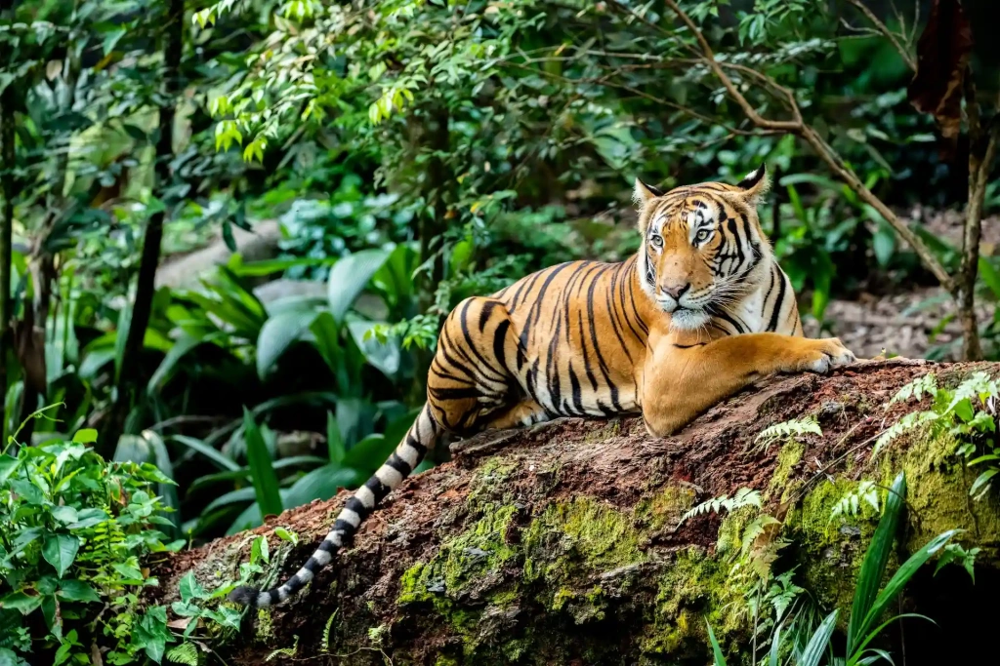
Tigers are the largest living members of the cat family. Their striking striped coats make them some of the most recognizable wild cats on Earth.
Historically, tigers were classified into nine subspecies, but recent genetic and evolutionary studies have refined this system. A 2018 DNA analysis identified six modern subspecies: the Bengal tiger — the most numerous, found in India, Bangladesh, Nepal, and Bhutan; the Amur tiger — the largest, adapted to the harsh climate of the Russian Far East; the South China tiger — one of the rarest; the Sumatran tiger — the smallest subspecies, inhabiting the island of Sumatra; the Indochinese tiger — found in Southeast Asia; and the Malayan tiger, discovered relatively recently in Malaysia.
Tigers are solitary, territorial predators, primarily active at dusk and night. They are exceptional hunters, capable of taking down prey larger than themselves, including large deer, wild boar, and even young elephants. Males are significantly larger than females, with some, like the Amur tiger, weighing 300 kilograms (660 pounds) or more.
According to the International Union for Conservation of Nature (IUCN), all modern tiger subspecies are classified as endangered. A 2025 Times of India article highlights a troubling behavioral change: tigers, which previously avoided human contact, are becoming bolder and more aggressive. Experts attribute this change to habitat fragmentation, early separation of cubs from their mothers, and rising populations in certain areas, which increases competition for resources.
Przewalski’s Horse

This unusual horse was named after the Russian explorer Nikolai Przewalski, who first described the species in the late 19th century. Physically, it differs from domestic horses in several ways: it has a more robust build, a short, thick mane, and a distinctive coat — light gray or yellowish-brown with a dark stripe along its back.
Przewalski’s horses are native to the steppe and semi-desert regions of Central Asia, primarily Mongolia and northern China. They are well adapted to harsh climates, where winter temperatures can drop as low as −40 °C (−40 °F).
For a long time, the Przewalski’s horse was considered the only truly wild horse species. However, a 2018 study published in Science challenged this view. DNA analysis revealed that these horses partly descend from domesticated ancestors and are not purely wild. Researchers also discovered a genetic link to the ancient Botai horses, which lived in what is now Kazakhstan around 5,500 years ago.
In September 2020, TIME reported the birth of the first cloned Przewalski’s horse foal. Named Kurt, the foal was produced through somatic cloning using DNA from a male preserved at the San Diego Zoo since 1980. Scientists hope that cloning will help restore the population’s genetic diversity. Kurt was named in honor of Dr. Kurt Benirschke, founder of the Frozen Zoo, a genetic bank for endangered species.
“This birth expands the opportunity for genetic rescue of endangered wild species,” says Ryan Felan, executive director of Revive & Restore, a nonprofit wildlife conservation organization.
Northeastern African cheetah
. Image source: Angelino Adventures")
The Northeastern African cheetah inhabits arid savannahs, semi-deserts, and open grassy plains, where antelopes and other small to medium-sized ungulates are plentiful. It is distinguished by slightly denser fur and a somewhat sparser pattern of black spots. Its belly is white, and the face features light areas around the eyes with characteristic black “tear marks.”
DNA studies indicate that this subspecies diverged from the Southern African cheetah between 32,200 and 244,000 years ago. Like other cheetahs, it is highly specialized for high-speed hunting: its flexible spine, long legs, and powerful muscles allow it to reach speeds of up to 105 kilometers per hour (65 miles per hour). The long tail acts as a rudder, helping maintain balance and enabling sharp turns during a chase, while semi-retractable claws grip the ground like cleats, preventing slipping at top speed.
Unlike many other large African predators, Northeastern cheetahs hunt primarily during the day, especially in the early morning and late afternoon, to avoid competition with nocturnal predators such as lions and leopards. They rely on keen eyesight rather than smell, spotting prey from up to two kilometers (1.2 miles) away. Their hunting strategy combines a stealthy approach with a sudden sprint, often capturing prey in under a minute.
Snow Leopard
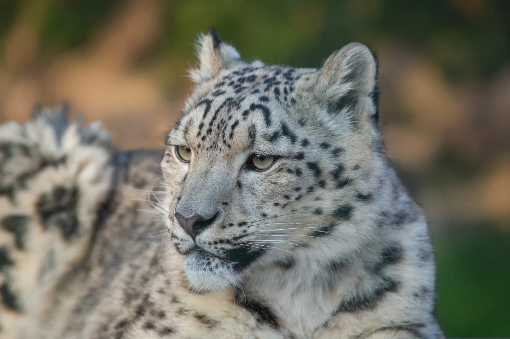
The snow leopard is a rare and elusive predator that inhabits the high-altitude regions of Central Asia, including the Himalayas, Karakoram, Tian Shan, and Pamir. Its range covers about 2.3 million square kilometers (888,000 square miles), with roughly 60% of this area in China.
Snow leopards are well-adapted to harsh climates and rocky terrain. Their wide, fluffy tails, which can reach up to 90% of their body length, help them keep their balance while running and serve as warm cover in cold weather. Large, fur-covered paws distribute weight over deep, loose snow and improve grip on steep slopes.
These cats are primarily solitary and secretive, most active at dusk and before dawn. They move across cliffs, resting on ledges and ridges that provide vantage points for tracking prey while remaining camouflaged.
The species is classified as endangered, with an estimated 2,710 to 3,386 mature individuals remaining in the wild. Major threats include poaching for fur and bones, habitat loss, and hunting of their prey.
“Only 35% of the current snow leopard range is predicted to remain as stable climate refugia. Snow leopard habitat is expected to decline by 8-23% by 2070 due to climate impacts,” the 2021 report by the World Wildlife Fund (WWF) states.
Sunbird
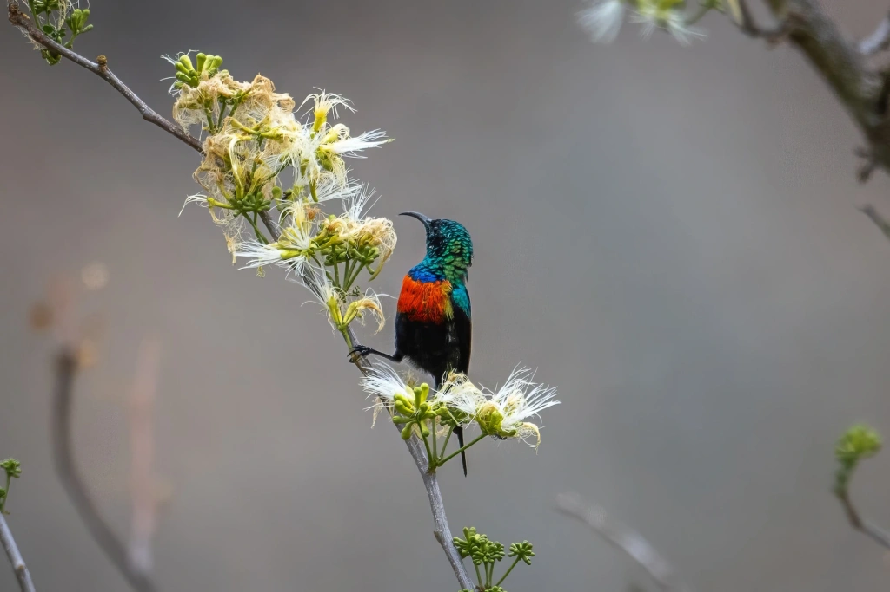
Small, brightly colored songbirds from the order Passeriformes, sunbirds are found mainly in Africa, the Middle East, and Southeast Asia. They inhabit diverse environments, from dry savannahs to humid tropical forests, and can even live at elevations up to 4,000 meters (13,100 feet) above sea level.
These birds are easily recognized by their long, curved bills, perfectly adapted for extracting nectar. Unlike hummingbirds, they rarely hover in place, instead feeding while perched on flowers. Although nectar makes up the bulk of their diet, they also consume insects and spiders, particularly when raising their young.
Many species exhibit marked sexual dimorphism, with males displaying bright, iridescent plumage, while females are more subdued in color. Some species, such as the malachite sunbird, enter a state of nocturnal torpor. A temporary state of reduced body temperature and activity helps them conserve energy during cold nights.
Mandarin Duck
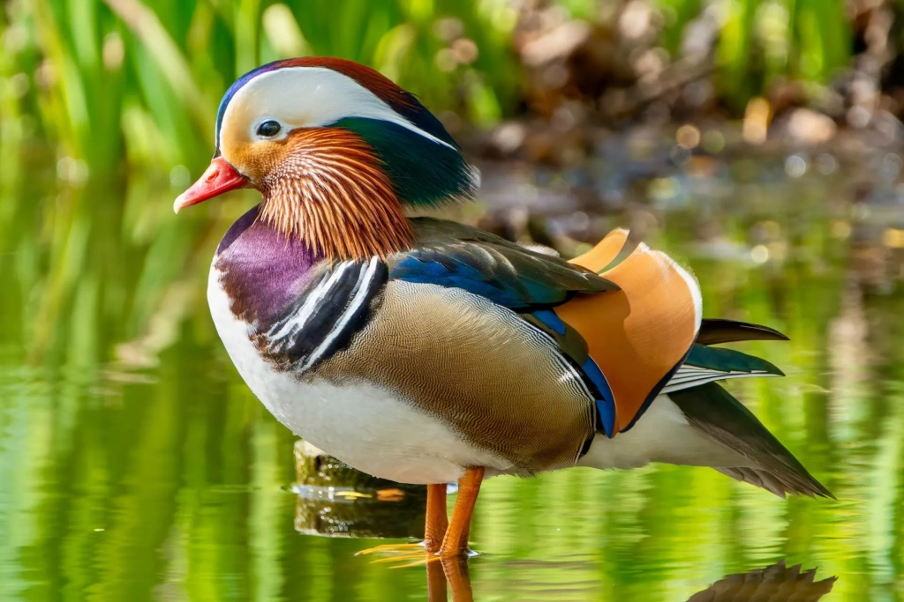
The mandarin duck is a brightly colored bird native to East Asia. Males are especially eye-catching, with a mix of green and purple feathers, bright orange “sails” on their back, a red bill, and bold white stripes on the head. Females are more subdued in color but still recognizable by the distinct white stripe behind the eye and their softly spotted bellies.
These ducks prefer to nest in tree cavities, sometimes up to 15 meters (49 feet) above the ground. The female chooses the nesting spot and lays the eggs, while the male typically remains close by. Rather than large open lakes, mandarin ducks favor quiet forest ponds surrounded by dense vegetation. Interestingly, they are the only duck species that cannot hybridize with others.
In October 2018, a mandarin duck suddenly appeared in New York’s Central Park, capturing the attention of birdwatchers and media outlets alike. This unexpected visitor from East Asia quickly became a local sensation, earning the nickname “Hot Duck.” Its surprise arrival created such a buzz that Audubon magazine editor Andrew Del-Colle even wrote an open letter to the colorful newcomer.
“First off, I want to thank you. We don't know where you came from (someone's private collection maybe?) or why you suddenly appeared (you were crushingly lonely with no duck friends?), but you have captured the fascination of birders and non-birders alike, in New York City and around the world,” Del-Colle wrote in his letter.
In March 2019, the duck vanished as suddenly as it had appeared and was never seen in the park again. Despite rumors and occasional false sightings, the true whereabouts of the “Hot Duck” remain a mystery.
Peafowl
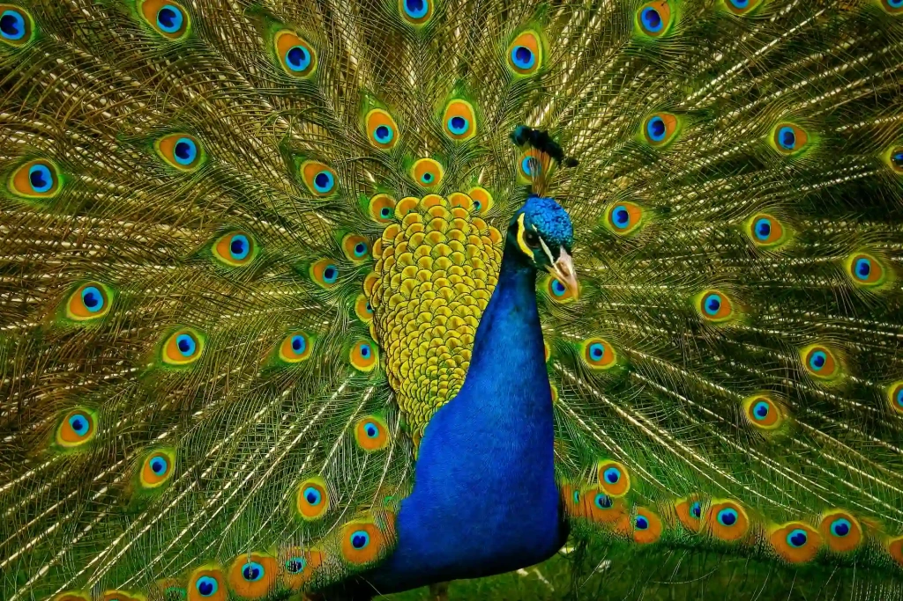
These large, brightly colored birds belong to the pheasant family. The best known is the Indian peafowl, famous for its spectacular tail feathers covered in iridescent, eye-shaped patterns. During the mating season, males fan out their tails and shake them up to 25 times per second, producing both visual and subtle sound cues to impress potential mates.
A study by physics professor Suzanne Amador Kane found that the frequency of these tail vibrations closely matches the resonance of guitar strings.
“Charles Darwin observed in 1871 that 'Peacocks … rattle their quills together, and the vibratory movement apparently serves merely to make noise, for it can hardly add to the beauty of their plumage,' but it took this multidisciplinary team of scientists to characterize the dynamics of this behavior,” said Suzanne Kane, associate professor of physics and lead author of the study “Biomechanics of the Peacock’s Display: How Feather Structure and Resonance Influence Multimodal Signaling.”
Peafowl are native to South Asia, particularly India and Sri Lanka, and are also found in parts of Southeast Asia. According to National Geographic, a much rarer species, the Congo peafowl, lives exclusively in the rainforests of Central Africa.
In the wild, Indian peafowl favor a mix of wooded and open landscapes that provide both shelter and space to forage. While capable of flight, they spend most of their time on the ground, feeding on seeds, insects, and small reptiles.
Their social behavior is also fascinating: in both the wild and captivity, males often form harems, each attended by several females.
Red panda
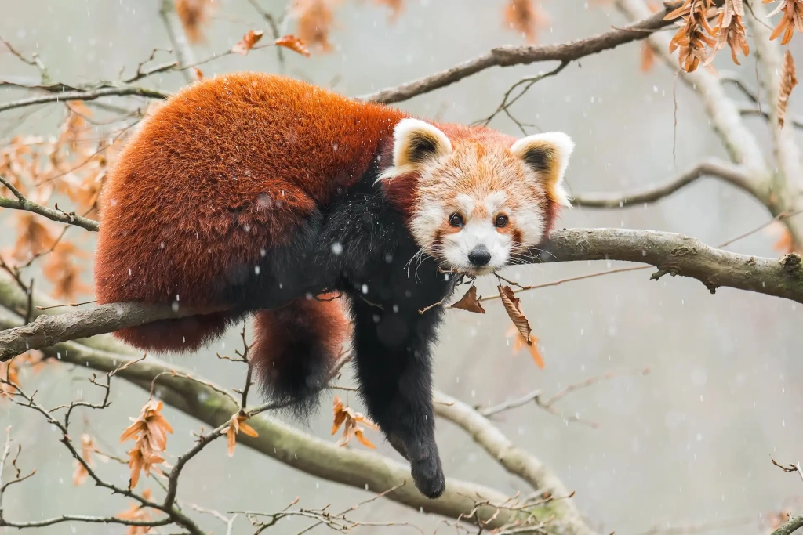
The red panda lives in the mountain forests of the Himalayas and southwestern China. Despite its name, it isn’t closely related to the giant panda. For a time, it was even classified as part of the raccoon family, but modern genetic research has revealed that red pandas belong to their own distinct family, which split from other carnivores millions of years ago.
These small, tree-dwelling animals spend much of their time hidden among the branches, resting or escaping predators. Their long, bushy tails help them balance, while sharp claws allow them to climb nimbly and even descend headfirst.
Red pandas feed mainly on bamboo, though their diet also includes fruits, berries, fungi, flowers, and occasionally bird eggs. Because their digestive system is not efficient at processing fiber, they must eat large quantities each day. To conserve energy, they are mostly nocturnal, with about half of their day — roughly 55% — spent sleeping.
African Elephant

There are two main species of elephants: African and Asian. The African elephant is larger and, according to the conservation organization Save the Elephants, is divided into two subspecies. The savannah elephant, the biggest of them all, roams the plains of sub-Saharan Africa, while the smaller forest elephant inhabits the dense forests of Central and West Africa.
Elephants live in highly organized social groups, typically led by a matriarch, an experienced female who guides the herd and passes down vital knowledge about migration routes, water sources, and feeding grounds. When young males reach maturity, they usually leave the herd to live more independently.
These giants are also known for their intelligence and emotional depth. Research suggests they possess a sense of self-awareness and can display emotions such as joy, grief, and empathy. A 2024 study revealed that African elephants use names to communicate with one another — a rare behavior among wild animals. These names are conveyed through specialized vocal signals: low-frequency rumbles that elephants can transmit and detect over long distances.
“Just like humans, elephants use names, but probably don’t use names in the majority of utterances, so we wouldn’t expect 100%,” explained Michael Pardo, the study’s author and a biologist at Cornell University, to Associated Press.
African elephants face significant threats today. Poaching for ivory is the most pressing danger, particularly in Africa, while habitat loss, human-wildlife conflicts, and climate change further threaten their populations.

All content on Angelino Adventures is created with expert insights and thorough research, in line with our Editorial Policy.


Want to know more about Tanzania adventures?
Get in touch with our team! We've explored all the top destinations across Tanzania. Our Kilimanjaro-based adventure consultants are ready to share tips and help you plan your unforgettable journey.
 Tanzania Safaris
Tanzania Safaris
 Kilimanjaro and other mountains
Kilimanjaro and other mountains
 About Tanzania
About Tanzania
 Tanzania Islands
Tanzania Islands